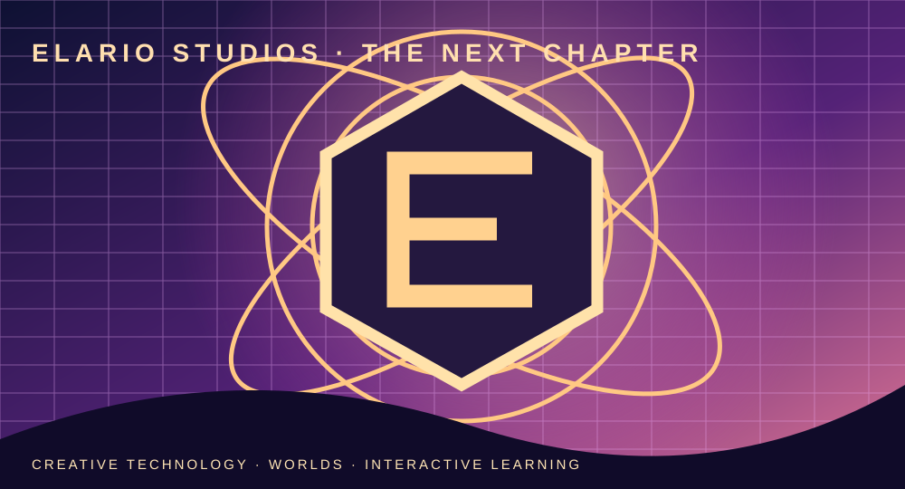

Design with personality
Original visual identities, beautiful usable tools, clear communication and thoughtful interfaces.
We imagine creative technology that feels a little ahead of its time. Our first public journey begins with Team Jura Atlas—a map companion built with ambition, care and community.
Original visual identities, beautiful usable tools, clear communication and thoughtful interfaces.
Small reliable releases, tested functionality, modular code and room to scale.
Celebrate people behind the games. Build places worth returning to, even as projects evolve.
See the full map directory, the studio showcase, and our ongoing community tribute.
